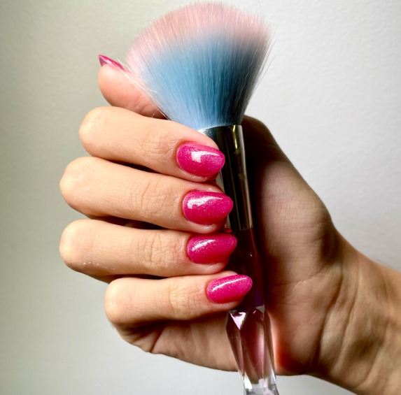
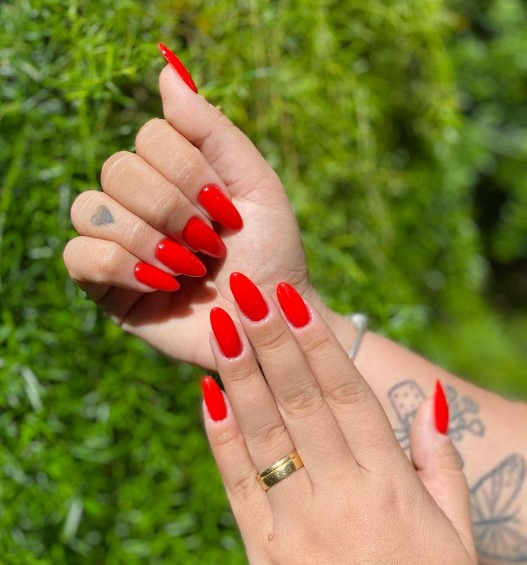

Transformando Unhas, Criando Amizades
Casa Linda Flor Salão de beleza e Spa.
Agendar um horárioOlá, me chamo Dany Marques, e sou apaixonada pelo mundo da beleza. Como Nail Designer e porcelanista, dedico-me a criar unhas de acrílico, gel e fibra há 18 anos. Cada detalhe do meu trabalho reflete meu amor e dedicação pela arte de embelezar as mãos.
Minha jornada profissional me trouxe muito mais do que habilidades técnicas. Ao longo dos anos, construí relacionamentos valiosos com minhas clientes, que se tornaram amigas queridas. A conexão que desenvolvemos vai além das unhas; é um vínculo de confiança e carinho que enriquece minha vida.
Amo o que faço e acredito que essa paixão é evidente em cada trabalho que entrego. Meu compromisso é continuar aprendendo e aprimorando minhas técnicas, sempre com o objetivo de proporcionar felicidade e bem-estar a todos que passam pelas minhas mãos.
Com mais de 18 anos no mercado, como Naildesigner já conquistei muitos clientes com meu Amor e muito Carisma muitas amigas .
Unhas de acrílico são extensões artificiais aplicadas sobre as unhas naturais. Elas são feitas de um pó de acrílico (polímero) e um líquido (monômero) que, quando combinados, formam uma substância moldável que endurece ao ar..

Unhas de gel são feitas com um tipo de gel especial que é aplicado em camadas sobre as unhas naturais ou extensões de unhas. O gel é então curado, ou endurecido, usando uma luz UV ou LED, criando uma superfície dura e brilhante que se assemelha a unhas naturais..

Unhas de fibra são extensões de unhas feitas com tiras finas de fibra de vidro ou seda que são colocadas sobre as unhas naturais. As fibras são fixadas e endurecidas com gel ou resina, criando uma unha artificial que é durável e de aparência natural..